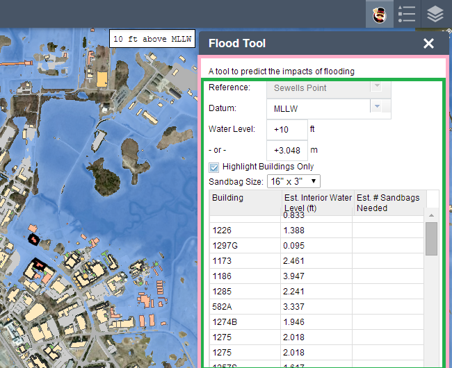

Tools and Techniques for Web AppBuilder Development
Tom Wayson and Gavin Rehkemper
ESRI Database Services
Related Session
ArcGIS Web AppBuilder: Customizing and Extending
Tomorrow (Friday, Mar 13) - 1:00 PM - Location: Pasadena/Sierra/Ventura
What is the Web AppBuilder?
Brings "builder" experience from Flex/Silverlight to JavaScript
- Good for:
- Multi-purpose apps that need to run on multiple devices
- Creating a suite of custom apps with consistent style/behavior
- Empowering non-devlopers to create apps
- Other frameworks/templates might be better for:
- Specific, custom web apps, with specialized workflows
- When there is a template that does almost all of app functionality
Web AppBuilder Tools and Techniques
Tools and techniques to help you:
- Use source control
- Scaffold out boilerplate files
- Create widgets that can be used outside the WAB
- Test your code
How do I Check in My Code?
Web AppBuilder Folder Structure
A standalone Node/Express app with a specific folder structure:
- Stem app: [install dir]/client/stemapp/widgets/[YourWidget]/
- Built apps: [install dir]/server/apps/[AppId]/widgets/[YourWidget]/
This probably should NOT be in your suorce control.
Task Automation to the Rescue
Work in your source control tree and use scripts to copy files
Example: Gruntfile.js
module.exports = function(grunt) {
var appDir = 'C:\\code\\arcgis-web-appbuilder-1.0\\server\\apps\\2';
var stemappDir = 'C:\\code\\arcgis-web-appbuilder-1.0\\client\\stemapp';
grunt.initConfig({
watch: {
main: {
files: ['src/**'],
tasks: ['sync'],
options: {
spawn: false
}
}
},
sync: {
main: {
files: [{
cwd: 'src',
src: ['**'],
dest: appDir
}, {
cwd: 'src',
src: ['**'],
dest: stemappDir
}],
verbose: true // Display log messages when copying files
}
}
});
grunt.loadNpmTasks('grunt-contrib-watch');
grunt.loadNpmTasks('grunt-sync');
grunt.registerTask('default', ['sync', 'watch']);
};
TIP: Become a Wrap Star
Use the Web AppBuilder Widgets As Wrappers
BaseWidgetis the interface between your widget(s) and the rest of the app (the panel, dialog windows, other widgets, etc)- Create sub widget(s) for your business logic / workflows
Example: Using Sub-Widgets
Advantages of the wrap star lifestyle
- Widgets can be used outside the Web AppBuilder
- Decoupled widgets are:
- Faster to develop
- Easier to test
... but isn't it more work to set up?
Tools to Help You Build Widgets
A generator for your sub widgets
- Yeoman generator: generator-esri-widget

Related Session
A few of our favorite things
Scott Davis
3PM Mesquite B
How Do I Test My Code?

{kind=link}
Testing Your Code...
... and only your code
- Don't test the
BaseWidgetcode - Test outside the builder environment
- Use the test specs and pages scaffoled by generator-esri-widget
Demo: Generating Widgets and Running Tests

Where Can I Find or Share Widgets?
Sharing
- Sharing:
- Discover great widgets:
- https://github.com/Esri/solutions-webappbuilder-widgets
- Meta: Search (please submit your github links!)
- More to come - stay tuned.
Where Can I Get Help?

Resources
Here are some resources to get you started:
- Videos:
- Intro: UC 2014 - DevSummit 2014
- Customizing: UC 2014 - DevSummit 2014
- Documentaion:
- Online: Developer Edition (Download Here!)
- Bundled: http://localhost:3344/webappbuilder/help/
- GeoNet:
Thank You
esri.com/events/session-rater?id=90#18969

grehkemper@esri.com - @gavinrehkemper twayson@esri.com - @tomwayson